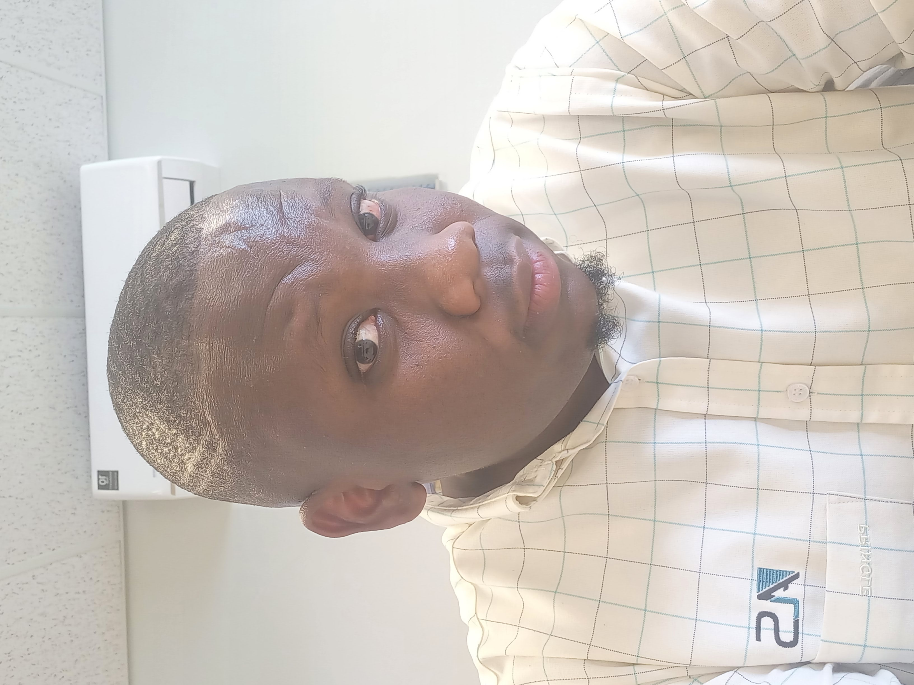

SUMMARY
-
I grew up as a young man very curious about what happens behind the scene, I remember watching a movie and checking behind the TV to see how those people fit inside a small instrument. I started to wonder how all these gadgets work and how is it possible that we can you use all the technology and how does it come about?
From this I started growing the passion for technology and knowledge, and I wanted to create or invest something amazing one day.
- But as I grew up and having knowledge about this, I then realized that, I need to understand the physical part that make up technology, which is why I studied Electronics Engineering, before I took in a field of programming.
Best thing about this was that even during my undertaking for electronics, I was introduced to programming skills, and just like that everything came along together nicely
- It is best to mention that, I went to varsity not understanding english language as I went to a low education government public school.
I remember everything from high school to varsity, I have to go home and teach myself, so that I can learn and understand what was being taught.
This was a very difficult journey, such that back in varsity, I would ask my classmates who went to private college with good English skills how they
got the question wrong when they understood the question. The reason being that, this was my reason for not getting the answers correct: I could not understand what the question was asking.
- In this project, you will get to understand about the person behing the computer and designing the website, so that when you decide to up that offer you understand the product
Education
South African Airways Technical
Aviation Technician
Trade Aviation Technician
2021 December
Durban University of technology
Electrical Engineering Light Currect (Process Instrmentation Control Systems)
S4 Level (Undergraduate)
2011 December
Riverdene Secondary School
Matriculation Level
2008 December
Work Experience
Company: Advanced Laboratory Solutions
Year Started: 2021 May
Year End: Current Employer
Skills and Responsibilities:
Installation and Setup: I am responsible for installing and setting up equipment or systems at customer sites. This includes ensuring that all components are properly connected,
configured, and calibrated to function optimally.
Troubleshooting: Customers often approach me with technical issues or concerns. I diligently analyze the problem, using my expertise and diagnostic
tools to identify the root cause. Then, I develop and implement effective solutions to resolve the issue and prevent future occurrences.
Maintenance and Repairs: I perform routine maintenance checks to ensure the smooth operation of equipment. If a breakdown or malfunction occurs, I promptly diagnose the problem and
carry out necessary repairs or replacements of faulty parts. I aim to minimize downtime and restore functionality as quickly as possible.
Customer Support: I provide exceptional customer service by addressing inquiries, providing guidance, and offering technical advice to customers. I strive to understand their
needs and offer appropriate solutions, ensuring their satisfaction with the product or service.
Documentation and Reporting: I maintain accurate records of service activities, including detailed reports of performed repairs, maintenance procedures, and customer interactions.
These records help in tracking the equipment's performance, identifying recurring issues, and providing valuable feedback for product improvement.
Continuous Improvement: I am committed to enhancing my skills and knowledge through continuous learning and professional development opportunities. This enables me to adapt to new
technologies, improve troubleshooting abilities, and deliver the best possible service to customers.
Company: South African Airways Technical
Year Started: 2018 February
Year End: 2021 March
Skills and Responsibilities:
Design and Implement Electrical and Electronics circuits
Fault Finding Skills
Troubleshooting
Calibration of Aircraft equipment
Company: Bayport Financial Services
Year Started: 2012
Year End: 2014
Skills and Responsibilities:
Provided telephone support
Excellent customer service skills
Dealing with irate customers
Contacts
